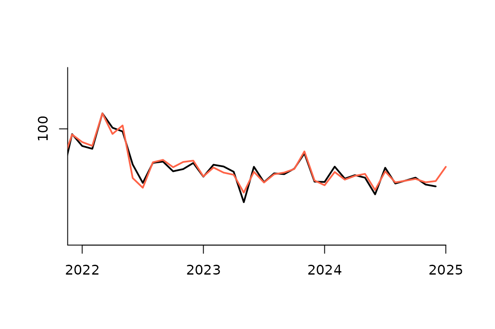
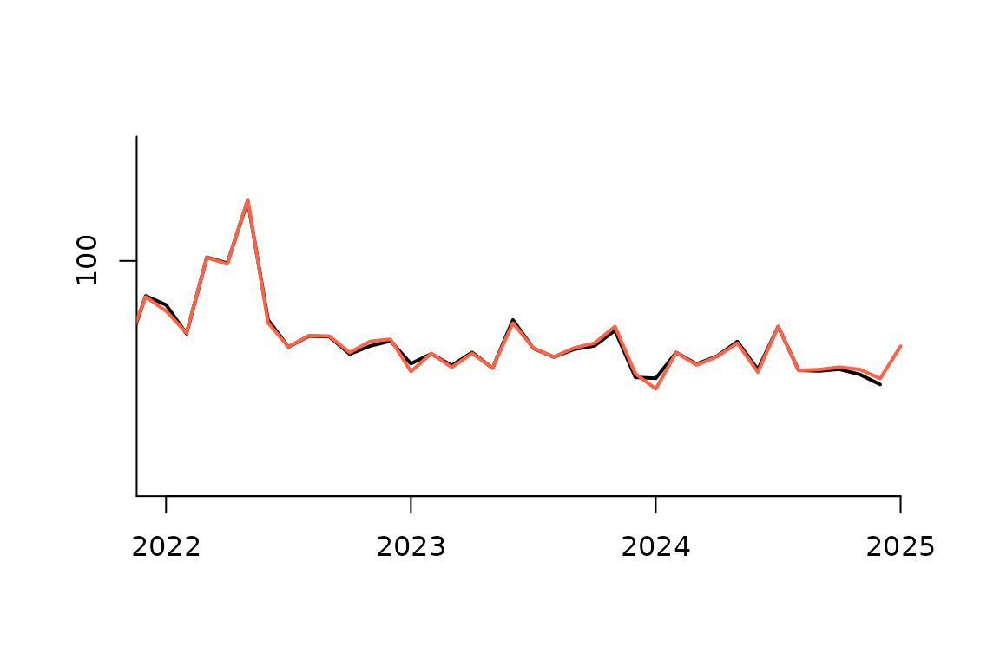
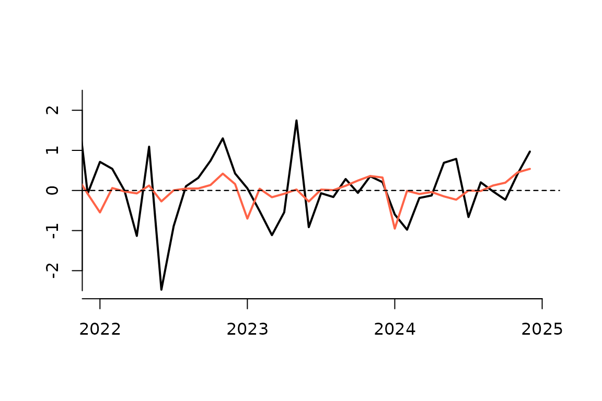

What is pickmodel?
introduction.RmdPre-adjustment and forecasting with a sARIMA model is of central importance to the x13-metholdogy, as calendar effects and effects of outliers need to be taken into account before seasonal components and trend can be calculated with filter based methods of x13. In Jdemetra and rjd3, the automatic procedure for selecting an sARIMA model is the automodel procedure. The pickmdl approach differs from the automodel procedure by restricting the model choiche to an ordered list of five parsimonious models. The pickmdl selection procedure selects the first model on this list that fulfills three pre-defined criteria.
The sARIMA models on the pickmdl list are: The pickmdl selection criteria are:
- The absolute average percentage error of the extrapolated values within the last three years of data is less than 15 percent
- The p-value associated with the fitted model’s Ljung-Box Q-statistic test of the lack of correlation in the model’s residuals must be greater than 5 percent
- There are no signs of overdifferencing. There is an indication of overdifferencing if the sum of the non-seasonal MA parameter estimates (for models with at least one non-seasonal difference) is greater than 0.9.
Why use pickmdl?
The pickmdl approach prioritizes model stability. By restricting the model choiche to an ordered list of five models, the selected model may not be the model with the optimal fit, but as it satisfies the selection criteria it should be of acceptable quality. This may lead to less future revisions of seasonally adjusted data, as the same model tends to be selected in the future if it still passes the criteria. The search for the model with the optimal fit, on the other hand, may lead to model change even though there is only a small difference in quality, with unnecessary revisions as a consequence.
Let us illustrate this point with an example. We use the Norwegian retail index for nace 47.6 . Following the best practice defined in ESS Guideluines on seasonal adjustment, model identification should be done once a year and the sARIMA model order should be kept unchanged throughout the year in line with the a predefined refreshment policy. Let us say that model identification is done in January each year, based on data until the preceding December. Throughout the year, the model is kept the same in accordance with the Outliers refreshment policy. Thus, in this case, there is a risk of major revisions in January each year, as the selected sARIMA model then may change.

Figure 1 automodel
This is what happens in the seasonal adjustment of the retail index for nace 47.6. In December 2024, the seasonal adjustment was based on a sARIMA model selected back in January 2024. Then the automodel procedure rejected the AIRLINE model and selected the sARIMA model of order . Turning to January 2025, the sARIMA model is identified anew and the AIRLINE model is still rejected. But the selected sARIMA model has now changed to . The resulting seasonally adjusted series are shown in figure 1, where the seasonal adjusted time series of Decemeber 2024 (black) is compared with the seasonal adjusted series in January 2025 (red.)

Figure pickmdl
In figure 2, the same series are compared, but here the pickmdl procedure has been used for model selection. With this approach too, the AIRLINE model was rejected both in January 2024 and in January 2025. But instead of searching for the optimal alternative model, the approach selects the first alternative model on the pickmdodel list that fulfills the predefined criteria. In both 2024 and in 2025, the sARIMA model is considered acceptable. So although the optimal model has changed, the pickmdl approach selects the same model that is of acceptable quality.
The difference between the seasonally adjusted series in December 2024 and January 2025 is shown in figure 3. The black line is the differences when using the automodel procedure, the red line is the differences when using the pickmdl procedure. We see that in this case, the model change that resulted from the first approach introduces considerable revisions of the adjusted data.

Figure difference
Limitations of the pickmdl procedure
A limitation of the pickmdl procedure, is that an inadequate sARIMA model may be chosen when none of the five models on the list passes the criteria. In this case, the procedure by default selects the AIRLINE model, potentially conflicting with the ESS’s guidelines on Seasonal adjustment. There may be other suitable sARIMA models, that are not considered. o address this issue, the pickmdl3 package provides the option to fall back on the automdl procedure when none of the five listed models proves adequate.